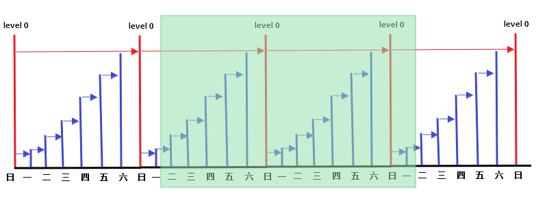

自建数据库 MySQL备份方案
备份方案
适用场景
备份周期
备份存放路径
备份和恢复工具
逻辑备份 数据量小于50G
每天一次
/alidata/backupmysqldump/mysql
物理备份 数据量大于50G
每周一全备，每天一增备
/alidata/backupinnobackupex
MySQL逻辑备份脚本 备份数据库常用案例：
备份内容
情况1
参数
情况2
参数
情况3
库的数量
所有
-A
多个
-B db1 db2 db3
db1
表的数量
所有
多个
–table t1 t2
一个 t1
结构
导出
不导出
-t
数据
导出
不导出
-d
列名
导出
-c
不导出
存储过程
导出
-R
不导出
创建数据库
导出
不导出
-n
生成库同步测试库 #!/bin/bash DBUser=root DBPwd=uplooking DBName=ecshoptest DBName_test=temp_ecshoptest DBHost=localhost BackupPath="/alidata/rdsbackup" BackupFile="$DBName -" $(date +%y%m%d_%H)".sql" BackupLog="$DBName -" $(date +%y%m%d_%H)".log" if !(test -d $BackupPath )then mkdir $BackupPath -pfi cd $BackupPath a=`mysqldump -u$DBUser -p$DBPwd -h$DBHost $DBName --opt --set-gtid-purged=OFF --default-character-set=utf8 --single-transaction --hex-blob --skip-triggers --max_allowed_packet=824288000 > "$BackupPath " /"$BackupFile " 2> /dev/null; echo $?` if [ $a != 0 ]then echo "$(date +%y%m%d_%H:%M:%S) 备份失败" >> $BackupLog else echo "$(date +%y%m%d_%H:%M:%S) 备份成功" >> $BackupLog mysql -u$DBUser -p$DBPwd -h$DBHost -e "drop database $DBName_test ;create database $DBName_test " b=`mysql -u$DBUser -p$DBPwd -h$DBHost $DBName_test < "$BackupPath " /"$BackupFile " 2> /dev/null; echo $?` if [ $b != 0 ] then echo "$(date +%y%m%d_%H:%M:%S) 导入失败" >> $BackupLog else echo "$(date +%y%m%d_%H:%M:%S) 导入成功" >> $BackupLog fi fi find "$BackupPath " -name "$DBname *[log,sql]" -type f -mtime +3 -exec rm -rf {} \;
备份全库 #!/bin/bash DBUser= DBPwd= DBName= DBHost= BackupPath="/alidata/rdsbackup" BackupFile="mysql.all." $(date +%y%m%d_%H)".sql" BackupLog="mysql.all." $(date +%y%m%d_%H)".log" if !(test -d $BackupPath )then mkdir $BackupPath -pfi cd $BackupPath a=`mysqldump -u$DBUser -p$DBPwd -h$DBHost -A --opt --set-gtid-purged=OFF --default-character-set=utf8 --single-transaction --hex-blob --skip-triggers --max_allowed_packet=824288000 > "$BackupPath " /"$BackupFile " 2> /dev/null; echo $?` if [ $a -ne 0 ]then echo "$(date +%y%m%d_%H:%M:%S) 备份失败" >> $BackupLog else echo "$(date +%y%m%d_%H:%M:%S) 备份成功" >> $BackupLog fi find "$BackupPath " -name "mysql.all*[log,sql]" -type f -mtime +3 -exec rm -rf {} \;
备份除系统库外的所有库 #!/bin/bash DBUser= DBPwd= DBName= DBHost= BackupPath="/alidata/rdsbackup" BackupFile="mysql.except.sys." $(date +%y%m%d_%H)".sql" BackupLog="mysql.except.sys." $(date +%y%m%d_%H)".log" if !(test -d $BackupPath )then mkdir $BackupPath -pfi cd $BackupPath a=`mysql -u$user -p$password -e 'show databases;' | grep -Ev 'Database|information_schema|performance_schema|mysql|test|sys' | xargs mysqldump -u$user -p$password --databases --set-gtid-purged=OFF --opt --default-character-set=utf8 --single-transaction --hex-blob --skip-triggers --max_allowed_packet=824288000 -d > "$BackupPath " /"$BackupFile " 2> /dev/null; echo $?` if [ $a -ne 0 ]then echo "$(date +%y%m%d_%H:%M:%S) 备份失败" >> $BackupLog else echo "$(date +%y%m%d_%H:%M:%S) 备份成功" >> $BackupLog fi find "$BackupPath " -name "mysql.except.sys.*[log,sql]" -type f -mtime +3 -exec rm -rf {} \;
备份单库结构和数据 #!/bin/bash DBUser= DBPwd= DBName=pe6 DBHost=localhost BackupPath="/alidata/cloudcare_dba/ks_backup" BackupFile="$DBName -" $(date +%y%m%d_%H)".sql" BackupLog="$DBName -" $(date +%y%m%d_%H)".log" if !(test -d $BackupPath )then mkdir $BackupPath -pfi cd $BackupPath a=`mysqldump -u$DBUser -p$DBPwd -h$DBHost $DBName --opt --set-gtid-purged=OFF --default-character-set=utf8 --single-transaction --hex-blob --skip-triggers --max_allowed_packet=824288000 > "$BackupPath " /"$BackupFile " 2> /dev/null; echo $?` if [ $a -ne 0 ]then echo "$(date +%y%m%d_%H:%M:%S) 备份失败" >> $BackupLog else echo "$(date +%y%m%d_%H:%M:%S) 备份成功" >> $BackupLog fi find "$BackupPath " -name "$DBname *[log,sql]" -type f -mtime +3 -exec rm -rf {} \;
备份单表的结构和数据 #!/bin/bash DBUser= DBPwd= DBName= DBHost= T1= T2= BackupPath="/alidata/rdsbackup" BackupFile="$DBName -" $(date +%y%m%d_%H)".sql" BackupLog="$DBName -" $(date +%y%m%d_%H)".log" if !(test -d $BackupPath )then mkdir $BackupPath -pfi cd $BackupPath a=`mysqldump -u$DBUser -p$DBPwd -h$DBHost $DBName --tables $T1 $T2 --opt --set-gtid-purged=OFF --default-character-set=utf8 --single-transaction --hex-blob --skip-triggers --max_allowed_packet=824288000 > "$BackupPath " /"$BackupFile " 2> /dev/null; echo $?` if [ $a -ne 0 ]then echo "$(date +%y%m%d_%H:%M:%S) 备份失败" >> $BackupLog else echo "$(date +%y%m%d_%H:%M:%S) 备份成功" >> $BackupLog fi find "$BackupPath " -name "$DBname *[log,sql]" -type f -mtime +3 -exec rm -rf {} \;
备份数据库的表结构 user=xx password=xx mysqldump -u$user -p$password -A --set-gtid-purged=OFF --opt --default-character-set=utf8 --single-transaction --hex-blob -d --skip-triggers --max_allowed_packet=824288000 > mysql.all.meta.sql mysql -u$user -p$password -e 'show databases;' | grep -Ev 'Database|information_schema|performance_schema|mysql|test|sys' | xargs mysqldump -u$user -p$password --databases --set-gtid-purged=OFF --opt --default-character-set=utf8 --single-transaction --hex-blob --skip-triggers --max_allowed_packet=824288000 -d > mysql.except.sys.meta.sql
导出单表为表格 #!/bin/sh DB_USER="xxx" DB_PASS="xx" DB_HOST="xxx" DB_NAME="xxx" TABLE1="xxx" TABLE2="xxx" DB_TABLE=$TABLE1 $TABLE2 BIN_DIR="/alidata/mysql/bin" BCK_DIR="/alidata/backup_account" DATE="`date +%Y-%m-%d`" DB_PATH=$BCK_DIR /$DATE echo $DB_PATH if [ ! -d $DB_PATH ];then echo $DB_PATH mkdir $DB_PATH chown mysql. $DB_PATH else echo $DB_PATH rm -rf $DB_PATH mkdir $DB_PATH chown mysql. $DB_PATH fi $BIN_DIR /mysqldump --opt --single-transaction --set-gtid-purged=OFF -u$DB_USER -p$DB_PASS -h$DB_HOST $DB_NAME $DB_TABLE > $DB_PATH /db_data_${TABLE1} _${TABLE2} .sqlmysql -u$DB_USER -p$DB_PASS -h$DB_HOST $DB_NAME -e "select * from $TABLE1 into outfile '$DB_PATH /$TABLE1 .xls'" ; mysql -u$DB_USER -p$DB_PASS -h$DB_HOST $DB_NAME -e "select * from $TABLE2 into outfile '$DB_PATH /$TABLE2 .xls'" ; scp -r $DB_PATH mysqlbackup@192.168.20.3:/alidata/backup_account/
关于权限问题 导出为sql，则需要待备份对象的只读权限select
导出为表格，则需要
# root用户（主从）授权file，导出表格 > grant file,select on * .* to backup_xls@'%' identified by 'bQ4QMKaxH7vkzUFQQd0u' ;> flush privileges;$ vim / etc/ my.cnf # 2018 -07 -13 CloudCareDBA secure_file_priv= '' 份跳过某个表或某个视图 # mysqldump - hxxx - uxxx - pxxx hdmpdb
逻辑备份恢复问题 错误信息 [Err] 1227 - Access denied; you need (at least one of ) the SUPER privilege(s) for this operation ERROR 1725 (HY000) at line 1936 : OPERATION need to be executed set by ADMIN
错误出现的场景
在创建 存储过程、函数、触发器、事件、视图的时候出现这个错误。
从本地数据库导出 SQL，在 RDS 上应用该 SQL 的时候出现该错误。
从 RDS MySQL 5.6 实例下载逻辑备份，导入到 RDS 或本地数据库中。
错误原因
导入RDS MySQL 实例：SQL 语句中含有需要 Supper 权限才可以执行的语句，而 RDS MySQL不提供 Super 权限，因此需要去除这类语句。
本地 MySQL 实例没有启用 GTID。
解决 1 去除 DEFINER 子句
检查 SQL 文件，去除下面类似的子句
在 Linux 平台下，可以尝试使用下面的语句去除：
sed -e 's/DEFINER[ ]*=[ ]*[^*]*\*/\*/ ' your.sql > your_revised.sql
2 去除 GTID_PURGED 子句
检查 SQL 文件，去除下面类似的语句
SET @@GLOBAL .GTID_PURGED= 'd0502171-3e23-11e4-9d65-d89d672af420:1-373, d5deee4e-3e23-11e4-9d65-d89d672a9530:1-616234' ;
在 Linux 平台，可以使用下面的语句去除
awk '{ if (index($0,"GTID_PURGED")) { getline; while (length($0) > 0) { getline; } } else { print $0 } }' your.sql | grep -iv 'set @@' > your_revised.sql
3 检查修改后的文件
修改完毕后，通过下面的语句检查是否合乎要求。
egrep -in "definer|set @@" your_revised.sql
如果上面的语句没有输出，说明 SQL 文件符合要求。
sed -e 's/DEFINER[ ]*=[ ]*.*@.*[ ]*//' dayshare.sql > your.sql sed -n '/DEFINER[ ]*=[ ]*.*@.*[ ]*/p' your.sql egrep -in "definer|set @@" your.sql
XtraBackup物理备份脚本
MySQL基于innobackupex的物理全备和增量备份
2018-03-07 BoobooWei
功能概述
实现MySQL数据库物理备份；
一周一全备，每天一增备；
自动清理过期备份（只保留最近的全备+增备）
备份任务每日定时执行
安装percona-xtrabackupex 官网下载对应版本的percona-xtrabackupex软件
cd /alidata/install yum install -y lrzsz libev tar -xf Percona-XtraBackup-2.4.9-ra467167cdd4-el7-x86_64-bundle.tar rpm -ivh percona-xtrabackup-24-2.4.9-1.el7.x86_64.rpm innobackupex -v
测试中使用的版本为：innobackupex version 2.4.9 Linux (x86_64) (revision id: a467167cdd4)
数据库授权 遵循最小权限原则，授予如下权限：
grant lock tables,reload,process,replication client,super on *.* to ro_user@'localhost' identified by '(Uploo00king)'; flush privileges;
备份脚本 将备份脚本传输到服务器的/alidata/install目录下并解压：
unzip xtrabackup_cron.zip -d /alidata/
测试明细
[root@mastera install]# ls mysql5.6.tar mysql-5.7.17-linux-glibc2.5-x86_64.tar.gz software xtrabackup_cron.zip [root@mastera install]# unzip xtrabackup_cron.zip -d /alidata/ Archive: xtrabackup_cron.zip creating: /alidata/xtrabackup_cron/ creating: /alidata/xtrabackup_cron/bin/ inflating: /alidata/xtrabackup_cron/bin/mysql_increment_hot_backup.sh creating: /alidata/xtrabackup_cron/conf/ inflating: /alidata/xtrabackup_cron/conf/.mysql_increment_hot_backup.conf.swp inflating: /alidata/xtrabackup_cron/conf/mysql_increment_hot_backup.conf creating: /alidata/xtrabackup_cron/log/ creating: /alidata/xtrabackup_cron/var/ extracting: /alidata/xtrabackup_cron/var/mysql_increment_hot_backup.err extracting: /alidata/xtrabackup_cron/var/mysql_increment_hot_backup.index [root@mastera install]# ll /alidata/ total 0 drwxr-xr-x 3 root root 114 Mar 6 18:38 install drwxr-xr-x 11 mysql mysql 141 Feb 26 18:15 mysql drwxr-xr-x 6 root root 47 Jan 1 2016 xtrabackup_cron [root@mastera install]# cd /alidata/xtrabackup_cron/ [root@mastera xtrabackup_cron]# ll total 0 drwxr-xr-x 2 root root 42 Jan 1 2016 bin drwxr-xr-x 2 root root 87 Jan 1 2016 conf drwxr-xr-x 2 root root 6 Jan 1 2016 log drwxr-xr-x 2 root root 82 Jan 1 2016 var
备份脚本结构：
bin 备份的可执行脚本
conf 备份的配置文件
log 备份脚本的日志信息
var 备份文件的索引信息
备份测试明细 修改配置文件如下：
[root@mastera bin]# vim ../conf/mysql_increment_hot_backup.conf # mysql 用户名 user=ro_user # mysql 密码 password=(Uploo00king) # 备份路径 backup_dir=/alidata/backup # percona-xtrabackup 备份软件路径 脚本中将使用该目录与/bin/innobakcupex做拼接 xtrabackup_dir=/usr # 全备是在一周的第几天，1为每周一 full_backup_week_day=1 # 全量备信息名称 前缀 full_backup_prefix=full
关闭数据库的情况下执行备份脚本，查看备份脚本的错误日志情况：
[root@mastera ~]# cd /alidata/xtrabackup_cron/log/ [root@mastera log]# ll total 4 -rw-r--r-- 1 root root 742 Mar 7 12:06 full_2018-03-07_12-06-16_3.log [root@mastera log]# cat full_2018-03-07_12-06-16_3.log 180307 12:06:16 innobackupex: Starting the backup operation IMPORTANT: Please check that the backup run completes successfully. At the end of a successful backup run innobackupex prints "completed OK!". 180307 12:06:17 version_check Connecting to MySQL server with DSN 'dbi:mysql:;mysql_read_default_group=xtrabackup;port=3306;mysql_socket=/tmp/mysql.sock' as 'ro_user' (using password: YES). Failed to connect to MySQL server as DBD::mysql module is not installed at - line 1327. 180307 12:06:17 Connecting to MySQL server host: localhost, user: ro_user, password: set, port: 3306, socket: /tmp/mysql.sock Failed to connect to MySQL server: Can't connect to local MySQL server through socket '/tmp/mysql.sock' (2).
手动修改系统时间测试脚本执行情况
[root@mastera ~]# date -s "2018-03-07 12:03:00" && bash /alidata/xtrabackup_cron/bin/mysql_increment_hot_backup.sh [root@mastera ~]# date -s "2018-03-08 12:03:00" && bash /alidata/xtrabackup_cron/bin/mysql_increment_hot_backup.sh [root@mastera ~]# date -s "2018-03-09 12:03:00" && bash /alidata/xtrabackup_cron/bin/mysql_increment_hot_backup.sh [root@mastera ~]# date -s "2018-03-10 12:03:00" && bash /alidata/xtrabackup_cron/bin/mysql_increment_hot_backup.sh [root@mastera ~]# date -s "2018-03-11 12:03:00" && bash /alidata/xtrabackup_cron/bin/mysql_increment_hot_backup.sh [root@mastera ~]# date -s "2018-03-12 12:03:00" && bash /alidata/xtrabackup_cron/bin/mysql_increment_hot_backup.sh [root@mastera ~]# date -s "2018-03-13 12:03:00" && bash /alidata/xtrabackup_cron/bin/mysql_increment_hot_backup.sh [root@mastera backup]# ll total 20 drwxr-xr-x 6 root root 4096 Mar 7 12:08 full_2018-03-07_12-07-53_3 drwxr-xr-x 5 root root 83 Mar 12 12:03 full_2018-03-12_12-03-00_1 drwxr-xr-x 6 root root 4096 Mar 8 12:03 incr_2018-03-08_12-03-02_4 drwxr-xr-x 6 root root 4096 Mar 9 12:03 incr_2018-03-09_12-03-05_5 drwxr-xr-x 6 root root 4096 Mar 10 12:03 incr_2018-03-10_12-03-00_6 drwxr-xr-x 6 root root 4096 Mar 11 12:03 incr_2018-03-11_12-03-00_7 [root@mastera backup]# ll total 8 drwxr-xr-x 6 root root 4096 Mar 12 12:03 full_2018-03-12_12-03-00_1 drwxr-xr-x 6 root root 4096 Mar 13 12:03 incr_2018-03-13_12-03-00_2 [root@mastera var]# cat mysql_increment_hot_backup.index {week_day:1, dir:full_2018-03-12_12-03-00_1, type:full, date:2018-03-12} {week_day:2, dir:incr_2018-03-13_12-03-00_2, type:incr, date:2018-03-13} [root@mastera var]# cat mysql_increment_hot_backup.index_2018-03-11 {week_day:3, dir:full_2018-03-07_12-07-53_3, type:full, date:2018-03-07} {week_day:4, dir:incr_2018-03-08_12-03-02_4, type:incr, date:2018-03-08} {week_day:5, dir:incr_2018-03-09_12-03-05_5, type:incr, date:2018-03-09} {week_day:6, dir:incr_2018-03-10_12-03-00_6, type:incr, date:2018-03-10} {week_day:7, dir:incr_2018-03-11_12-03-00_7, type:incr, date:2018-03-11}
测试时间从周三开始执行第一次备份，生成全备份full_2018-03-07_12-07-53_3，后续到周日，都是增量备份。
测试第二周的周一，生成全备份full_2018-03-12_12-03-00_1;
测试第二周的周二，生成增量备份incr_2018-03-13_12-03-00_2，并删除了前一周所有的备份。
ECS快照备份脚本 ''' Created on: @author: BoobooWei Email: rgweiyaping@hotmail.com Version: V.18.09.04.0 Description: ECS自建MySQL数据库通过阿里快照方式进行数据库自动备份 Help: pip install --upgrade pip hash -r pip install aliyun-python-sdk-core pip install aliyun-python-sdk-ecr ''' import sysimport timeimport jsonimport datetimeimport loggingfrom collections import OrderedDictfrom aliyunsdkcore.client import AcsClientfrom aliyunsdkecs.request.v20140526 import DescribeDisksRequest, CreateSnapshotRequestfrom subprocess import *reload(sys) sys.setdefaultencoding('utf8' ) data = { 'data' : [], 'code' : 0 , 'msg' : '' } backup_start_time = datetime.datetime.now() year_time = backup_start_time.strftime('%y' ) month_time = backup_start_time.strftime('%m' ) day_time = backup_start_time.strftime('%d' ) logging.basicConfig(level=logging.DEBUG, format ='%(asctime)s %(filename)s[line:%(lineno)d] %(levelname)s %(message)s' , datefmt='%a, %d %b %Y %H:%M:%S' , filename='/alidata/python_sc/MySQLAutoSnapshotBackup.log' , filemode='a+' ) class Do_Cmd (): def __init__ (self, cmd ): output = Popen(cmd, shell=True , stdout=PIPE, stderr=PIPE) self .out, self .err = output.communicate() returncode = output.poll() if returncode != 0 : data['code' ] = 1 data['msg' ] = self .err def case_a (self ): return self .out.strip() def case_b (self ): return self .out.strip().split('\n' ) def case_c (self ): return self .out.strip().split() def case_d (self ): line_list = [] for line in self .out.strip().split('\n' ): line_list.append(line.strip().split('\t' )) return line_list def case_e (self ): line_list = [] a = [] for line in self .out.strip().split('\n' ): line_list.append(line.strip().split('\t' )) key = line_list[0 ] for value in line_list[1 :]: a.append(OrderedDict(zip (key, value))) return a class Do_Server (): def __init__ (self, cmd ): output = Popen(cmd, shell=True , stdout=PIPE, stderr=PIPE) returncode = output.wait() if returncode != 0 : data['code' ] = 1 class MySQLAPI (): def __init__ (self, bin ): self .bin = bin def stop_mysql (self ): logging.info('{}\t开始停止数据库' .format (datetime.datetime.now().strftime('%Y-%m-%dT%H:%MZ' ))) shell = '{} stop' .format (self .bin ) return Do_Cmd(shell).case_a() def start_mysql (self ): logging.info('{}\t开始启动数据库' .format (datetime.datetime.now().strftime('%Y-%m-%dT%H:%MZ' ))) shell = '{} start' .format (self .bin ) return Do_Server(shell) def check_mysql_status (self ): shell = '{} status' .format (self .bin ) result = Do_Cmd(shell).case_a() if "not running" in result: return 1 else : return 0 class AliYunEcsAPI : def __init__ (self, access_key, access_secret, region ): self .client = AcsClient(access_key, access_secret, region) def get_DescribeSnapshots (self, DiskId, SnapshotId ): try : request = DescribeDisksRequest.DescribeDisksRequest() request.set_accept_format('json' ) request.set_action_name('DescribeSnapshots' ) request.set_DiskIds(DiskId) request.set_SnapshotId(SnapshotId) results = json.loads(self .client.do_action_with_exception(request)) return results['Snapshots' ]['Snapshot' ] except Exception as e: logging.info(e) return {} def create_Snapshots (self, DiskId, SnapshotName ): try : request = CreateSnapshotRequest.CreateSnapshotRequest() request.set_accept_format('json' ) request.set_action_name('CreateSnapshot' ) request.set_DiskId(DiskId) request.set_SnapshotName(SnapshotName) results = json.loads(self .client.do_action_with_exception(request)) return results['SnapshotId' ] except Exception as e: logging.info(e) return {} def check_snapshot_status (self, status ): """ 快照状态。取值范围： progressing：正在创建的快照 accomplished：创建成功的快照 failed：创建失败的快照 all：所有快照状态 """ if status == 'accomplished' : return 0 else : return 1 def MySQLAutoSnapshotBackup (): """ # 停服务 # 创建快照 # 判断快照是否完成 # 启动服务 # 邮件发送 :return: """ logging.info('{}\t开始快照备份数据库' .format (datetime.datetime.now().strftime('%Y-%m-%dT%H:%MZ' ))) bin = '/alidata/mysql/support-files/mysql.server' a = 'xxx' k = 'xxx' r = 'cn-shanghai' DiskId = 'd-uf6dnfbgdn5v2uah2gca' mysql = MySQLAPI(bin ) api = AliYunEcsAPI(a, k, r) mysql.stop_mysql() if mysql.check_mysql_status() == 1 : logging.info('{}\t停止数据库服务 OK' .format (datetime.datetime.now().strftime('%Y-%m-%dT%H:%MZ' ))) SnapshotName = 'boobootest{}' .format (datetime.datetime.now().strftime('%Y-%m-%dT%H:%MZ' )) SnapshotId = api.create_Snapshots(DiskId, SnapshotName) logging.info('{0}\t开始创建快照{1}' .format (datetime.datetime.now().strftime('%Y-%m-%dT%H:%MZ' ), SnapshotId)) while True : result = api.get_DescribeSnapshots(DiskId, SnapshotId) status = result[0 ]['Status' ] if api.check_snapshot_status(status) == 0 : logging.info('{}\t快照创建成功 OK' .format (datetime.datetime.now().strftime('%Y-%m-%dT%H:%MZ' ))) mysql.start_mysql() if mysql.check_mysql_status() == 0 : logging.info('{}\t启动数据库 OK' .format (datetime.datetime.now().strftime('%Y-%m-%dT%H:%MZ' ))) logging.info('{}\tsend email' .format (datetime.datetime.now().strftime('%Y-%m-%dT%H:%MZ' ))) break else : time.sleep(10 ) logging.info('{}\t快照创建中...' .format (datetime.datetime.now().strftime('%Y-%m-%dT%H:%MZ' ))) logging.info('{}\t结束快照备份数据库' .format (datetime.datetime.now().strftime('%Y-%m-%dT%H:%MZ' ))) if __name__ == '__main__' : MySQLAutoSnapshotBackup()
Oracle备份方案 Oracle在线热备 概念
注意：增量备份（通用）=差异增量（Oracle） 差异备份（通用）=累计增量（Oracle） 增量备份（通用）:相对于上一次的备份 差异备份（通用）:相对于上一次的全备
包含从最近一次备份以来被修改或添加的数据块.可以分为差异增量备份和累计增量备份
差异增量备份：仅仅包含n级或n级以下被修改过的数据块。备份数据量小，恢复时间长。
累计增量备份：仅仅包含n-1级或n-1级以下被修改过的数据块。备份数据量大，恢复时间短。
0级增量备份相当于一个完整备份,该备份包含所有已用的数据块文件,与完整备份的差异是完整备份不能用作级增量备份的基础
冷备计划
备份周期：一周一全备，每天一增备
备份数据保留策略：保留近14天的备份
RMAN备份周期 一周一全备，每天一增备
[
每周日晚做 0 级备份,就是备份所有使用过的数据块.
周一做 1 级增量,备份小于等于 1 以来备份后发生变化的块,前面有个 0 级备份.所以备份当天的变化.
周二做 1 级增量,备份小于等于 1 以来备份后发生变化的块,前面有个 1 级备份.所以备份当天的变化.
周三做 1 级增量,备份小于等于 1 以来备份后发生变化的块,前面有个 1 级备份.所以备份当天的变化.
周四做 1 级增量,备份小于等于 1 以来备份后发生变化的块,前面有个 1 级备份.所以备份当天的变化.
周五做 1 级增量,备份小于等于 1 以来备份后发生变化的块,前面有个 1 级备份.所以备份当天的变化.
周六做 1 级增量,备份小于等于 1 以来备份后发生变化的块,前面有个 1 级备份.所以备份当天的变化.
周日做 0 级增量, 备份所有使用过的数据块.
RMAN备份保留策略 保留近14天的备份
[
[
Linux计划任务crontab
RMAN自带的retention policy
Linux计划任务crontab 保留14天的备份数据，当今天是周一时，会保留 近14天的数据，删除两周前的周一的数据。
周日
周一
周二
周三
周四
周五
周六
周日
周一
周二
周三
周四
周五
周六
清除
保留
保留
保留
保留
保留
保留
保留
保留
保留
保留
保留
保留
保留
Now
因此保留14天的备份数据，可以将数据恢复的时间范围为：上周周日~本周当前
RMAN自带的retention policy 保留14天的备份数据，即每份备份数据的冗余备份数量为14
configure retention policy to redundancy 14; configure retention policy to recovery window of 14 days; report obsolete; delete obsolete
备份恢复脚本 备份生成脚本 通过备份生成脚本，根据不通的生产环境生成备份脚本。
AutoGetRmanBackupScripts.sh
#!/bin/bash read -p '指定备份目录 [ default /home/oracle/rmbk ]:' rmbk_dirif [ -z ${rmbk_dir} ]then rmbk_dir="/home/oracle/rmbk" echo "备份目录为：${rmbk_dir} " else echo "备份目录为：${rmbk_dir} " fi read -p '执行备份文件子目录 [ default YYYYMMDD ]:' dirname if [ -z ${dirname} ]then dirname ="date +'%Y%m%d'" echo "备份子目录为：${dirname} " else echo "备份子目录为：${dirname} " fi read -p '开始生成脚本，请按回车键' mkdir -p ${rmbk_dir} echo "${rmbk_dir} 目录创建 OK" echo '获取 oracle 用户环境变量 OK' env | sed -n '/oracle/p;/ORACLE/p' >> ${rmbk_dir} /rmbk.shecho '生成备份脚本rmbk.sh OK' cat >> ${rmbk_dir} /rmbk.sh << ENDF rmbk_dir=${rmbk_dir} dirname=\`${dirname}\` mkdir -p \${rmbk_dir}/\${dirname} week=\`date +'%w'\` if [[ \${week} == 0 ]] then level=0 else level=1 fi rman target / log=${rmbk_dir}/bak_inc\${level}.log append cmdfile=${rmbk_dir}/rmanbk_inc\${level} #del old folders find ${rmbk_dir} -type d -mtime +13 -exec ls -d {} \\; find ${rmbk_dir} -mtime +13 -exec rm -rf {} \\; ENDF echo '生成RMAN level0脚本 OK' cat >> ${rmbk_dir} /rmanbk_inc0 << ENDF run { configure retention policy to recovery window of 14 days; configure controlfile autobackup on; allocate channel ch1 type disk; backup as compressed backupset incremental level 0 format '${rmbk_dir}/%T/incr0_%d_%U' tag 'day_incr0' database plus archivelog delete input; crosscheck backup; crosscheck archivelog all; delete noprompt obsolete; delete noprompt expired backup; delete noprompt expired archivelog all; release channel ch1; } ENDF echo '生成RMAN level1脚本 OK' cat >> ${rmbk_dir} /rmanbk_inc1 << ENDF run { configure retention policy to recovery window of 14 days; configure controlfile autobackup on; allocate channel ch1 type disk; backup as compressed backupset incremental level 1 format '${rmbk_dir}/%T/incr1_%d_%U' tag 'day_incr1' database plus archivelog delete input; crosscheck backup; crosscheck archivelog all; delete noprompt obsolete; delete noprompt expired backup; delete noprompt expired archivelog all; release channel ch1; } ENDF echo '配置Crontab OK' echo "30 22 * * * /bin/bash ${rmbk_dir} /rmbk.sh" | crontab
Rman全库恢复
不修改路径的恢复
rman_recover_full_database.sh
#!/bin/bash rmanbk=/home/oracle/rmanbk/ sid_file=/home/oracle/.bash_profile get_variables echo "Get SID and RMAN backup file of spfile and controlfile." cd $rmanbk for i in `ls `;do db_name=`strings $i | grep db_name`; if [[ $db_name != '' ]];then file=$i ;sid=`echo $db_name | awk -F '=' '{print $2}' |awk -F "'" '{print $2}' `;fi ;done echo "SID :" $sid echo "RMAN FILE :" $file echo } clean_database echo "Set SID and Clean up database." sed -i "s/.*ORACLE_SID.*/export ORACLE_SID=${sid} /" ${sid_file} source ${sid_file} echo -e "shutdown immediate;\nstartup restrict exclusive force mount;\ndrop database;\nexit;" > /tmp/clean_database.sqlsqlplus / as sysdba @/tmp/clean_database.sql } recover_database cat > /tmp/rman_recover_database.sql << ENDF run{ startup nomount; restore spfile from "${rmanbk}/${file}"; startup force nomount; restore controlfile from "${rmanbk}/${file}"; alter database mount; catalog start with "${rmanbk}"; restore database; recover database; alter database open resetlogs; } ENDF rman target / @/tmp/rman_recover_database.sql echo "alter database open resetlogs;" | sqlplus / as sysdba} get_variables clean_database recover_database
修改路径的恢复
待补充
Oracle离线冷备 一般步骤 由于备份时需要停库，所以数据库服务不可用，属于离线冷备份：offline backup
有哪些待备份的数据库物理文件？
口令文件$ORACLE_HOME/dbs/orapw$ORACLE_SID
参数文件$ORACLE_HOME/dbs/init$ORACLE_SID.ora和$ORACLE_HOME/dbs/spfile$ORACLE_SID.ora
控制文件select name from v$controlfile
数据文件select name from v$datafile;
日志文件select member from v$logfile;
备份生成脚本 通过备份生成脚本，根据不通的生产环境生成备份脚本。
read -p '指定备份目录 [ default /home/oracle/coldbk] :' coldbkif [ -z ${coldbk} ]then coldbk=/home/oracle/coldbk echo "备份目录为：${coldbk} " else echo "备份目录为：${coldbk} " fi read -p '指定备份子目录 [默认为当前的年月日时分秒] :' dir_nameif [ -z ${dir_name} ]then dir_name=`date +'%Y%m%d%H%M%S' ` echo "备份子目录为：${dir_name} " else echo "备份子目录为：${dir_name} " fi read -p '开始生成脚本，请按回车键' mkdir -p ${coldbk} /${dir_name} echo "${coldbk} /${dir_name} 目录创建 OK" cat > ${coldbk} /shut.txt << ENDF conn / as sysdba shutdown immediate exit ENDF cat > ${coldbk} /start.txt << ENDF conn / as sysdba startup exit ENDF cat > ${coldbk} /get_cmd.txt << ENDF conn / as sysdba set echo off set feedback off set heading off set pagesize 1000 set linesize 100 spool ${coldbk}/${dir_name}/tmp_cmd select 'cp -v '||name||' ${coldbk}/${dir_name}/' from (select name from v\$controlfile union all select name from v\$datafile union all select member from v\$logfile); spool off exit ENDF sqlplus /nolog @${coldbk} /get_cmd.txt $> /dev/null cat > ${coldbk} /bk.sh << ENDF sqlplus /nolog @${coldbk}/shut.txt cp -v $ORACLE_HOME/dbs/orapw$ORACLE_SID ${coldbk}/${dir_name}/ cp -v $ORACLE_HOME/dbs/spfile$ORACLE_SID.ora ${coldbk}/${dir_name}/ cp -v $ORACLE_HOME/dbs/init.ora ${coldbk}/${dir_name}/ ENDF grep -v '^$' ${coldbk} /${dir_name} /tmp_cmd.lst >> ${coldbk} /bk.sh cat >> ${coldbk} /bk.sh << ENDF sqlplus /nolog @${coldbk}/start.txt ENDF echo "离线冷备-物理文件备份脚本生成 OK" echo "查看脚本：ll ${coldbk} /bk.sh"
云数据库RDS
登录 RDS 管理控制台，定位目标实例。
点击实例 ID 或者管理进入基本信息页面。
在左侧导航栏中，选择备份与恢复。
点击备份设置。
点击编辑，自定义自动备份的周期和时间。 注意：默认备份数据的保留时间是7天，不可修改。
点击确定，完成自动备份设置。
详情信息见下图：
MySQL
Redis
SQLserver
PostgreSQL
MongDB
数据备份保留
7天
备份周期
星期一,星期二,星期三,星期四,星期五,星期六,星期日
备份时间
01:00-02:00
日志备份
开启
日志备份保留
7天
注意点：支持日志备份的数据库，建议开启日志备份。云产品迭代较快，具体配置建议实时参考官方文档。